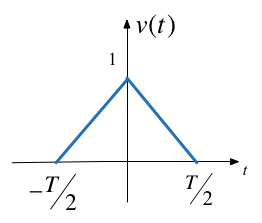
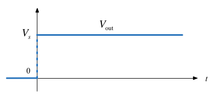

Lecturer: Set up MATLAB
clear all
format compact
imatlab_export_fig('print-svg') % Static svg figures.
Worksheet 3¶
To accompany Chapter 2 Elementary Signals¶
Colophon¶
This worksheet can be downloaded as a PDF file.
A printout of this worksheet will be distributed before the first class meeting in the Week 1: Classroom Activities section of the Canvas site. I will also distribute a copy to your personal Worksheets section of the OneNote Class Notebook so that you can add your own notes using OneNote.
You are expected to have at least watched the video presentation of Chapter 2 of the notes before coming to the first class. If you haven’t watch it afterwards!
After class, the lecture recording and the annotated version of this worksheet will be made available to you via OneNote and through Canvas.
Elementary Signals¶
Consider the network shown in below where the switch is closed at time \(t=T\) and all components are ideal.

Express the output voltage \(V_{\mathrm{out}}\) as a function of the unit step function, and sketch the appropriate waveform.
Q1: What happens before \(t=T\)?
\(v_{\mathrm{out}} = \mathrm{undefined}\)
\(v_{\mathrm{out}} = 0\)
\(v_{\mathrm{out}} = V_s\)
\(v_{\mathrm{out}} = V_s/2\)
\(v_{\mathrm{out}} = \infty\)
-> Open Poll: 1.2.1
Q2: What happens after \(t=T\)?
\(v_{\mathrm{out}} = \mathrm{undefined}\)
\(v_{\mathrm{out}} = 0\)
\(v_{\mathrm{out}} = V_s\)
\(v_{\mathrm{out}} = V_s/2\)
\(v_{\mathrm{out}} = \infty\)
-> Open Poll: 1.2.2
Q3: What happens at \(t=T\)?
\(v_{\mathrm{out}} = \mathrm{undefined}\)
\(v_{\mathrm{out}} = 0\)
\(v_{\mathrm{out}} = V_s\)
\(v_{\mathrm{out}} = V_s/2\)
\(v_{\mathrm{out}} = \infty\)
-> Open Poll: 1.2.3
Q4: What does the response of \(V_{\mathrm{out}}\) look like?
Circle the picture you think is correct on your handout.
| A |  | B |  |
| C |  | D |  |
-> Open Poll: 1.2.4
The Unit Step Function¶

In Matlab¶
In Matlab, we use the heaviside function (Named after Oliver Heaviside).
syms t
ezplot(heaviside(t),[-1,1])
heaviside(0)
See: show_heaviside.m.
Note that, so it can be plotted, Matlab defines the heaviside function slightly differently from the mathematically ideal unit step:
Circuit Revisited¶
Consider the network shown below, where the switch is closed at time \(t=T\).

Express the output voltage \(v_{\mathrm{out}}\) as a function of the unit step function, and sketch the appropriate waveform.
Simple Signal Operations¶


Synthesis of Signals from Unit Step¶
Unit step functions can be used to represent other time-varying functions such as rectangular pulses, square waves and triangular pulses.


Synthesize Symmetric Triangular Pulse¶
The Ramp Function¶

In the circuit shown above \(i_s\) is a constant current source and the switch is closed at time \(t=0\).
Show that the voltage across the capacitor can be represented as
and sketch the wave form.
The unit ramp function is defined as
so
and
Note
Higher order functions of \(t\) can be generated by the repeated integration of the unit step function.
For future reference, you should determine \(u_2(t)\), \(u_3(t)\) and \(u_n(t)\) for yourself and make a note of the general rule:
Details are given in equations 1.26—1.29 in the textbook.
The Dirac Delta Function¶

In the circuit shown above, the switch is closed at time \(t=0\) and \(i_L(t)=0\) for \(t<0\). Express the inductor current \(i_L(t)\) in terms of the unit step function and hence derive an expression for \(v_L(t)\).
Notes
To solve this problem we need to invent a function that represents the derivative of the unit step function. This function is called \(\delta(t)\) or the dirac delta function (named after Paul Dirac).
The delta function¶
The unit impulse or the delta function, denoted as \(\delta(t)\), is the derivative of the unit step.
This function is tricky because \(u_0(t)\) is discontinuous at \(t=0\) but it must have the properties
and
\(\delta(t) = 0\) for all \(t\ne 0\).
Sketch of the delta function¶

Important properties of the delta function¶
See the accompanying notes.
Examples¶
Example 3¶
Evaluate the following expressions
Example 4¶

(1) Express the voltage waveform \(v(t)\) shown above as a sum of unit step functions for the time interval \(-1 < t < 7\) s
Using the result of part (1), compute the derivative of \(v(t)\) and sketch its waveform.
Lab Work¶
In the first lab, next Tuesday, we will solve further elemetary signals problems using MATLAB and Simulink
following the procedure given between pages 1-17 and 1-22 of the Karris. We will also explore the
heaviside and dirac functions.
Answers to in-class questions¶
Mathematically
Q1. \(v_{\mathrm{out}} = 0\) when \(-\infty < t < 0\) (answer 2)
Q2. \(v_{\mathrm{out}} = V_s\) when \(0 < t < \infty\) (answer 3)
Q3. \(v_{\mathrm{out}} = \mathrm{undefined}\) when \(t=0\) (answer 1)
\(V_{\mathrm{out}}\) jumps from \(0\) to \(V_s\) instantanously when the switch is closed. We call this a discontinuous signal!
Q4: The correct image is:
Example 1: Answer 3.
Example 2: Answer 2.